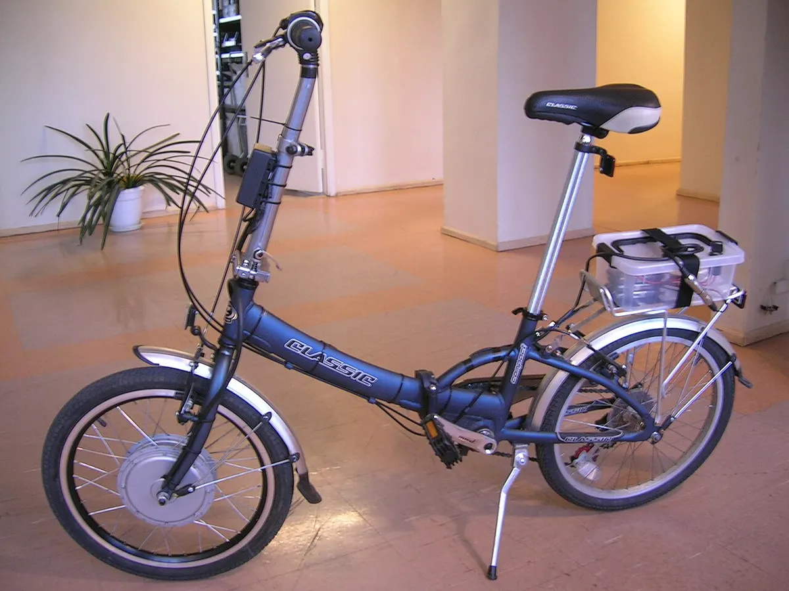
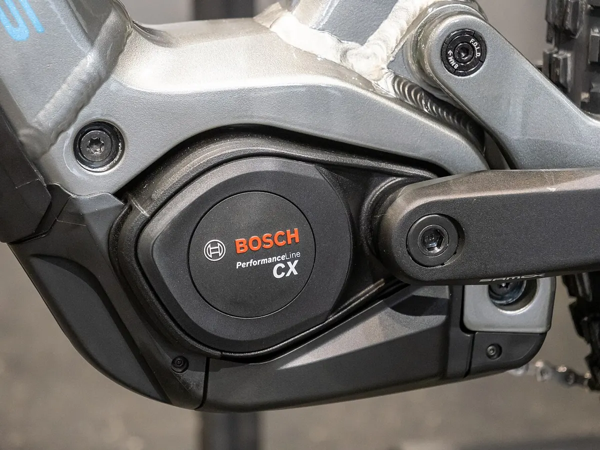
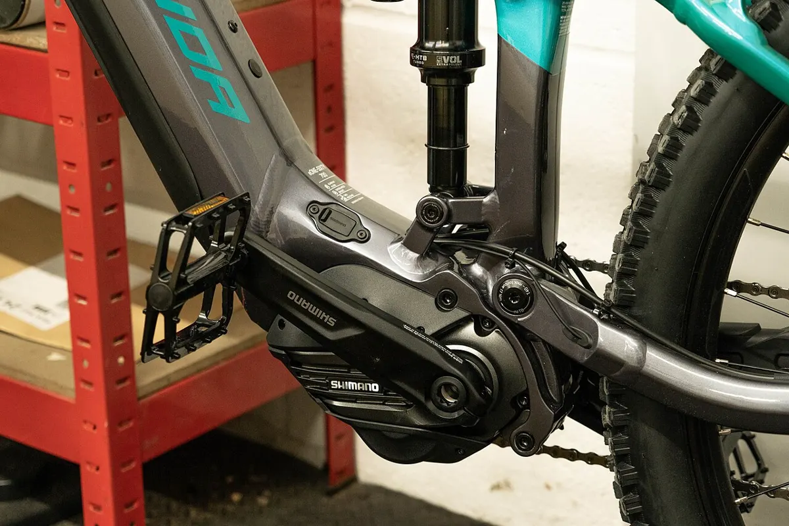
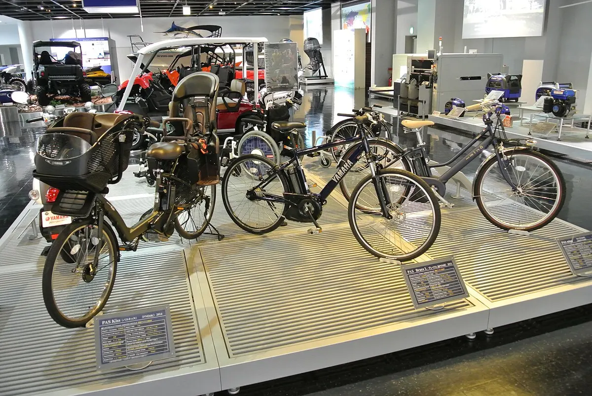
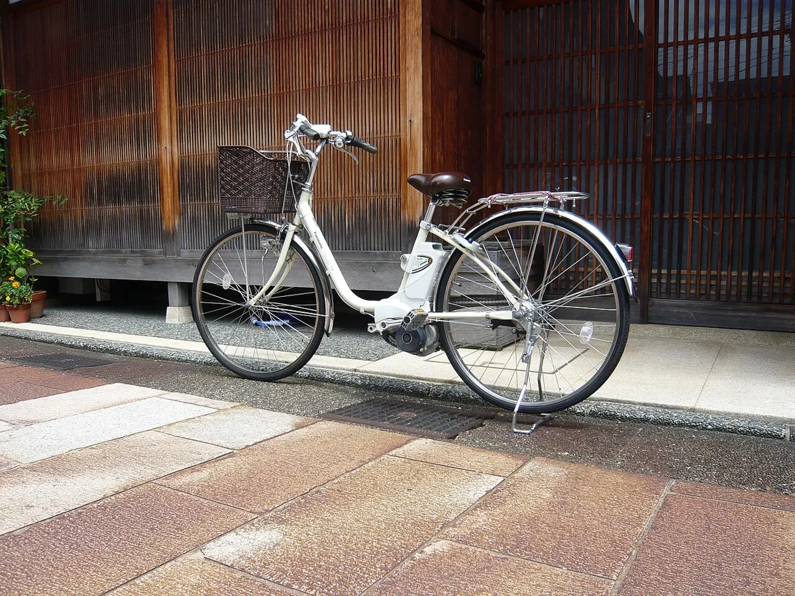
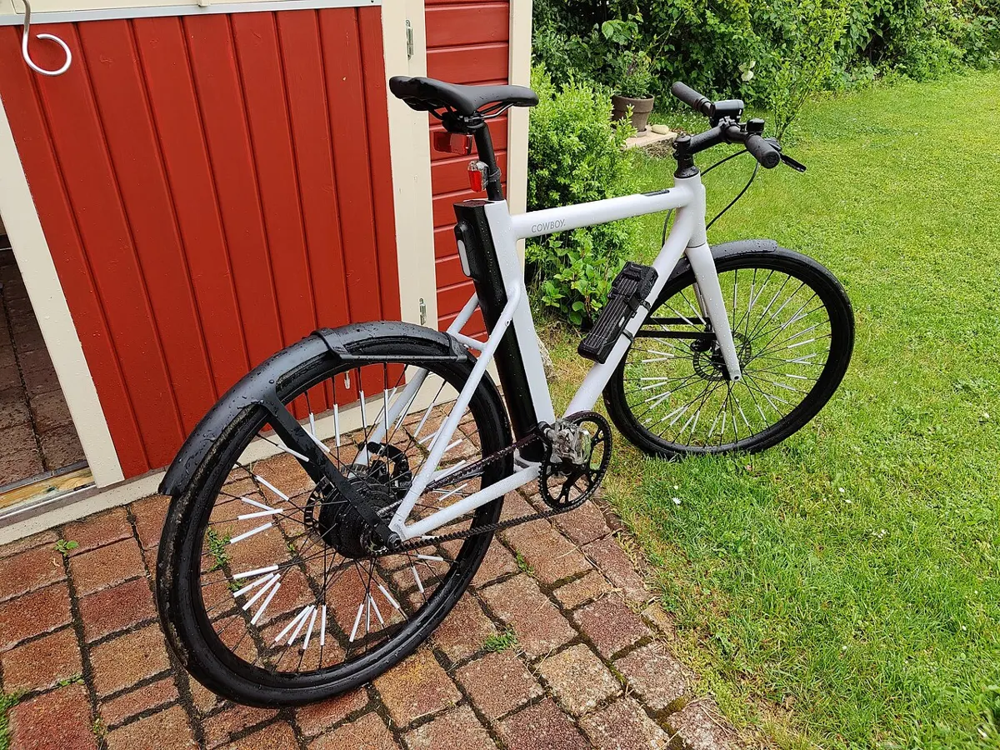

Электровелосипеды
Типы приводов, системы Bosch, Shimano, Yamaha, Panasonic, Bafang, безопасность батарей и уход.

Электровелосипед: мотор-колесо или кареточный мотор
Мотор электровелосипеда стоит либо во втулке колеса, либо в кареточном узле. От этого зависят ощущения от езды, вес, цена и обслуж…

Bosch eBike Systems
Немецкая Bosch вышла на рынок систем для электровелосипедов в 2010 году и стала одним из лидеров в Европе. Системы Bosch ставят мн…

Shimano STEPS и EP
Shimano STEPS — системы для электровелосипедов от крупнейшего производителя компонентов. Линейка включает городские и горные мотор…

Yamaha: от PAS до моторов для e-MTB
Yamaha выпустила PAS в 1993 году — первый массовый велосипед с электроусилителем педалирования. Сегодня компания делает городские …

Panasonic: японские электровелосипеды
Panasonic — один из крупнейших производителей электровелосипедов в Японии. Японские модели Panasonic — это в основном городские пе…
Bafang: мотор-колёса и наборы для переделки
Bafang — китайский производитель моторов для электровелосипедов (основан в 2003 году в Сучжоу). Компания выпускает мотор-колёса, к…

Батарея электровелосипеда: зарядка, хранение, безопасность
Литий-ионная батарея — самая дорогая и самая ответственная часть e-bike. Правильный уход продлевает её жизнь, а неправильный может…
Уход за японским электровелосипедом Panasonic
Японские электровелосипеды надёжны и рассчитаны на годы ежедневной езды. Если велосипед привезён из Японии, есть несколько особенн…
Уход за электровелосипедом
Легко Инструкция